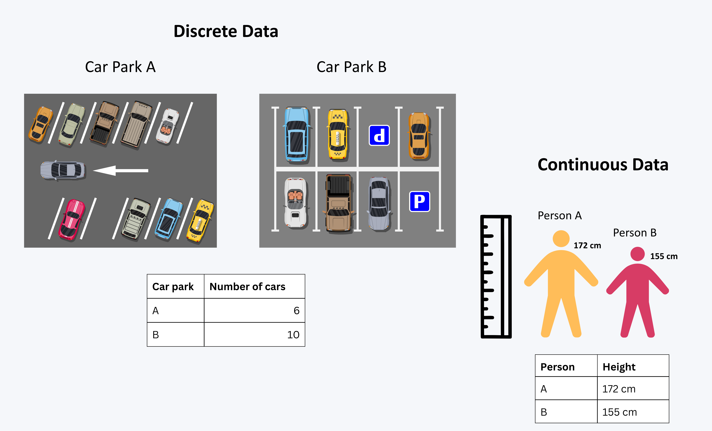
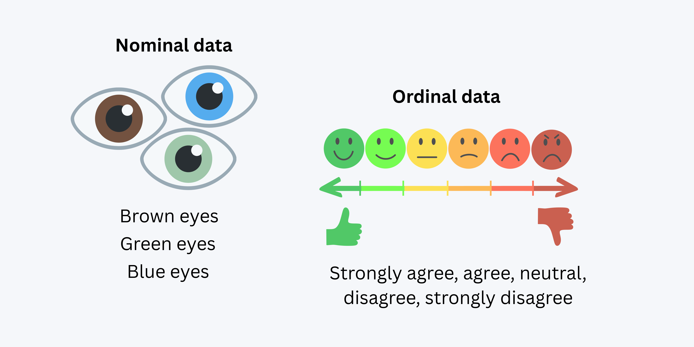
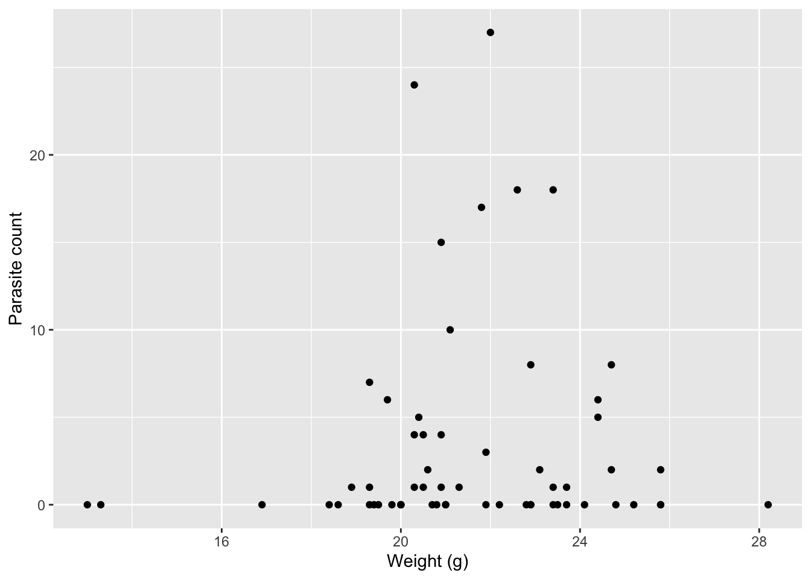

library(tidyverse)
library(janitor)
library(kableExtra)2 Workshop 2 - Exploratory Data Analysis - Extension
Using what we have just learnt in the Exploratory Data Analysis chapter, we will now do a small recap, and explore these skills using an example.
To recap…
2.1 Getting the Terminology Right !
We learnt about 4 types of data, within 2 different groups.
2.1.1 Quantitative/Numerical data
Data that can be measured and expressed numerically. It can be further classified into discrete and continuous data.
Discrete data: Data that can only take specific values, often counted. Examples include the number of students in a class or the number of cars in a car park.
Continuous data: Data that can take any value within a range, often measured. Examples include height and temperature.

2.1.2 Qualitative/Categorical data
Data that can be divided into categories or groups. It can be further classified into nominal and ordinal data.
Nominal data: Data that represents categories without any inherent order. Examples include; eye color, and types of fruits.
Ordinal data: Data that represents categories with a meaningful order. Examples include education level, satisfaction ratings, and size of clothing.

2.2 Summary Statistics
Summary Statistics are used to summarise and describe the main features of a dataset. They provide a quick overview of the data, allowing us to understand its central tendency, variability, and distribution.
2.2.1 Measures of averages:
Mean
The total of all the values divided by the number of values.
Median
The middle value when the data is arranged in order.
Mode
The value that occurs most often.
2.2.2 Measures of spread:
Range
The difference between the largest and smallest values.
Standard deviation
A measure of how spread out the values are around the mean.
Skewness
The measure of asymmetry in the distribution of data.
A positive skew indicates a longer tail on the right side, while a negative skew indicates a longer tail on the left side.
Skewness tells you where the outliers or extreme values are pulling the distribution, relative to where most of your data sits.
2.3 Checking Data for real - Using the Wood Mouse!
Let’s use what we’ve learnt using a dataset.
Meet Apodemus sylvaticus, the wood mouse. Apodemus sylvaticus can often be found with the parasite, gastrointestinal roundworm, Heligmosomoides polygyrus.
We have a dataset where researchers took a sample of 60 different Apodemus sylvaticus, checked their (i) sex, (ii) weight, and (iii) the count of parasites present.
Let’s first read in this dataset, found in data/mouse_parasite_counts.csv.
Before we do this, as you’ll remember, you’ll need a package to do this. If you rememeber from earlier (), we used the function, read_csv(), this is from the packagereadr. However readr, is part of the tidyverse package, which actually contains A LOT. Read about this in one of the appendices.
Good practice alert!! It is excellent practice to load up all the packages you will need at the start of your code, so you don’t forget to load them later on, and they are not dropped all over your code.
We will need the following packages throughout this script, make sure they are installed from the console first!
If the tidyverse() package is installed and loaded up, you should be able to read in the dataset.
mice_parasites <- read_csv("data/mouse_parasite_counts.csv")Let’s use a bit about what we learnt earlier with checking the data. We played with finding out about the data and2 split them into 3 different categories: (i) Dimensions/Size, (ii). Structure/variable names, (iii). Viewing the actual data, and (iv) starting to summarise the data.
# (1). Dimensions/Size:
nrow(mice_parasites) # number of rows, Base R
ncol(mice_parasites) # number of columns, Base R
# (2). Structure/Variable Names:
colnames(mice_parasites) # variable names, Base R
str(mice_parasites) # summary of the data structure, Base R
glimpse(mice_parasites) # summary of the data structure, tidyverse
# (3). Viewing the Actual Data:
head(mice_parasites) # first 6 rows, Base R
tail(mice_parasites) # last 6 rows, Base R
# (4). Starting to Summarise the Data:
summary(mice_parasites) # summary of the data, Base R
tabyl(mice_parasites, sex) # frequency, janitor
NoteDimensions/Size
nrow(mice_parasites) # number of rows, Base R[1] 60ncol(mice_parasites) # number of columns, Base R[1] 4
NoteStructure/Variable Names
colnames(mice_parasites) # variable names, Base R[1] "host_id" "sex" "weight_g" "parasite_count"str(mice_parasites) # summary of the data structure, Base Rspc_tbl_ [60 × 4] (S3: spec_tbl_df/tbl_df/tbl/data.frame)
$ host_id : chr [1:60] "H001" "H002" "H003" "H004" ...
$ sex : chr [1:60] "F" "M" "M" "M" ...
$ weight_g : num [1:60] 24.8 21 22.2 25.8 22.9 21.9 19.4 24.7 20.5 23.7 ...
$ parasite_count: num [1:60] 0 0 0 0 0 0 0 8 1 0 ...
- attr(*, "spec")=
.. cols(
.. host_id = col_character(),
.. sex = col_character(),
.. weight_g = col_double(),
.. parasite_count = col_double()
.. )
- attr(*, "problems")=<pointer: 0xb96d88040> glimpse(mice_parasites) # summary of the data structure, tidyverseRows: 60
Columns: 4
$ host_id <chr> "H001", "H002", "H003", "H004", "H005", "H006", "H007",…
$ sex <chr> "F", "M", "M", "M", "M", "M", "M", "M", "F", "M", "F", …
$ weight_g <dbl> 24.8, 21.0, 22.2, 25.8, 22.9, 21.9, 19.4, 24.7, 20.5, 2…
$ parasite_count <dbl> 0, 0, 0, 0, 0, 0, 0, 8, 1, 0, 0, 5, 0, 0, 1, 0, 0, 1, 2…
NoteViewing the Actual Data
head(mice_parasites) # first 6 rows, Base R# A tibble: 6 × 4
host_id sex weight_g parasite_count
<chr> <chr> <dbl> <dbl>
1 H001 F 24.8 0
2 H002 M 21 0
3 H003 M 22.2 0
4 H004 M 25.8 0
5 H005 M 22.9 0
6 H006 M 21.9 0tail(mice_parasites) # last 6 rows, Base R# A tibble: 6 × 4
host_id sex weight_g parasite_count
<chr> <chr> <dbl> <dbl>
1 H055 F 18.9 1
2 H056 M 24.1 0
3 H057 M 20.3 1
4 H058 F 20.7 0
5 H059 M 25.8 2
6 H060 M 20.3 4
NoteStarting to Summarise the Data
summary(mice_parasites) # summary of the data, Base R host_id sex weight_g parasite_count
Length :60 Length :60 Min. :13.00 Min. : 0.000
N.unique :60 N.unique : 2 1st Qu.:20.00 1st Qu.: 0.000
N.blank : 0 N.blank : 0 Median :21.05 Median : 0.500
Min.nchar: 4 Min.nchar: 1 Mean :21.55 Mean : 3.417
Max.nchar: 4 Max.nchar: 1 3rd Qu.:23.40 3rd Qu.: 4.000
Max. :28.20 Max. :27.000 tabyl(mice_parasites, sex) # frequency, janitor sex n percent
F 26 0.4333333
M 34 0.5666667Have a little run of the functions, then answer the following questions.
1. How many rows does the dataset contain? In this case, it will tell us how many different samples of Apodemus sylvaticus were taken.
2. How many variables (columns) are in the dataset? In this case, it will tell us how many different measurements were taken for each sample.
3. Which function would you use to see the first few rows of the data?
4. Which package does glimpse() come from?
5. What is tabyl() used for?
6. Which package is tabyl() from?
2.3.1 Using Histograms to Visualise the Data
We also learnt about histograms, which are a great way to visualise the distribution of a single variable. From this, we can see where the data is concentrated (if the data is distributed symmetrically), and if there are any outliers (extreme values).
Notice binwidth in our code below. This controls the width of each bar in the histogram. A smaller binwidth produces more bars, showing finer detail in the distribution, while a larger binwidth produces fewer bars, giving a smoother overview.
Let’s use this to look at the distribution of the parasite_count variable.
ggplot(mice_parasites, aes(x = parasite_count)) +
geom_histogram(binwidth = 1, fill = "lightblue", colour = "black") 
What can we tell about where the data is concentrated? Is it skewed? If so, in which direction?
Most of the data sits on the left (0–3), and the long thin tail stretches out to the right (up to 27) — and since skew is named after the tail direction, this is positive (right) skew
2.3.2 Summary / Description Statistics
As described above, we learnt about the Mean, Standard Deviation, Median, Mode, Range, and Skewness. Let’s calculate some of these for the parasite_count variable.
We learnt about the group_by() and summarise() functions to look at the mean.
mice_parasites_sex_summary <- mice_parasites %>%
group_by(sex) %>%
summarise(
n = n(),
mean_parasite_count = mean(parasite_count))
mice_parasites_sex_summary# A tibble: 2 × 3
sex n mean_parasite_count
<chr> <int> <dbl>
1 F 26 4.08
2 M 34 2.91We are able to interpret a little bit from this; the mean parasite count for male and female mice. Like how parasite count differs by sex. Please answer the following questions:
1. What’s this saying about how parasite counts differs by sex
If we look at sex, we can tell it’s higher in a certain sex. We can also look at the mean parasite count by weight. This is a little different though. Going back to knowing our 4 different variables in our different categories. How we can list the 4 different variables we have?
To help you out, lets run this code again:
colnames(mice_parasites) # variable names, Base R[1] "host_id" "sex" "weight_g" "parasite_count"Our output shows the four things that were measured:
“host_id”, “sex”, “weight_g”, “parasite_count”
Categorise each of these variables:
“host_id”
“sex”
“weight_g”
“parasite_count”
Now that we know what type of data we have, we can use the appropriate summary statistics to describe the weight.
If you completed the questions above, you would see that weight_g is a continuous variable. Unlike sex, which is categorical, we can’t summarise weight into two simple categories like males and females — instead we can first use the mean to describe it.
mice_parasites_weight_summary <- mice_parasites %>%
summarise(
mean_weight = mean(weight_g),
mean_parasite_count = mean(parasite_count),
)
mice_parasites_weight_summary# A tibble: 1 × 2
mean_weight mean_parasite_count
<dbl> <dbl>
1 21.5 3.42Although this shows something, it’s hard to tell what trend there really is just from these numbers. One thing we can do instead is visualise the data.
We can first use the histogram we have already learnt about, like before, let’s keep our bin width as 1 for finer distribution.
# Distribution of weight on its own
ggplot(mice_parasites, aes(x = weight_g)) +
geom_histogram(binwidth = 1, fill = "lightblue", colour = "black") 
In which direction is the data skewed?
The bulk of the data sits in a tight cluster around 19–24 g, with the tallest bars there. The longer, thinner tail pointing toward lower values makes it left-skewed.
So, from this plot - although we cannot infer anything about parasite count, we can tell that more mice are in the 20-30g range than in the 30-40g range, or below 20g, this makes sense by looking at our mice_parasites_weight_summary table above.
We still have a bit more to look at, we have looked at the mean in multiple different corners, but we haven’t looked at the other factors mentioned. We understand what the mean shows, now lets look at what everything else shows.
Like earlier, and in the main workbook, we can use the summarise() function to also calculate the median, mode, range and standard deviation, and range of these variables.
We learnt in the main workbook, that the standard deviation can simply be calculated using the sd() function, and median can be calculated using the median() function. Both in summarise().
mice_parasites_weight_summary <- mice_parasites %>%
summarise(
median_weight = median(weight_g),
mean_weight = mean(weight_g),
sd_weight = sd(weight_g),
median_parasite_count = median(parasite_count),
mean_parasite_count = mean(parasite_count),
sd_parasite_count = sd(parasite_count),
)
mice_parasites_weight_summary# A tibble: 1 × 6
median_weight mean_weight sd_weight median_parasite_count mean_parasite_count
<dbl> <dbl> <dbl> <dbl> <dbl>
1 21.0 21.5 2.73 0.5 3.42
# ℹ 1 more variable: sd_parasite_count <dbl>Remembering what the definition of each of these terms are, what can we tell about the data?
1. Comparing the mean (21.5) and median (21.0) for weight_g, what can we say about its distribution?
2. Comparing the mean (3.42) and median (0.5) for parasite_count, what can we say about its distribution?
3. Why is the mean so much higher than the median for parasite_count?
4. The standard deviation for parasite_count (6.17) is larger than its mean (3.42). What does this suggest?
5. Based on the summary statistics, which variable would the mean and SD alone summarise more reliably?
6. What would be a good next step before drawing firm conclusions about parasite_count from summary statistics alone?
Hopefully now we’ve got a better understanding of the Mean, Median and Standard Deviation. But we still have some remaining; Mode, Range and Skewness, as these aren’t commonly used within the summarise function.
Let’s start with the Range. There are a couple of ways to calclulate this. One of them is what we learnt in the main workbook, as the range is the smallest number subtracted from the largest number, we could just do that in code.
max(mice_parasites$parasite_count)-min(mice_parasites$parasite_count)[1] 27However, there is also a function, we can use. This is the diff() function from base R, which calculates the difference between the maximum and minimum values of a variable.
diff(range(mice_parasites$parasite_count))[1] 27Next lets look at the mode. As we learnt in the workbook, one of the best ways to do this is to write a small function.
get_mode <- function(x) {
freq_table <- table(x)
names(freq_table)[freq_table == max(freq_table)]
}
get_mode(mice_parasites$parasite_count)[1] "0"This outputs 0, as the majority of vlaues are 0 - most mice sampled don’t have the parasite.
However, if you want to load up another package to do this another way, you can, don’t forget to install_packages("") in the console before you load them up!
library(DescTools)
Mode(mice_parasites$parasite_count)[1] 0
attr(,"freq")
[1] 30Here there is not only the ‘0’ output, showing the most common number, there is also ‘30’ output, which is the number of times this value occurs in the dataset.
2.3.3 Putting it all together
Now let’s put this in one big summary statistics table!
mice_parasites_full_summary <- mice_parasites %>%
summarise(
mean_weight = mean(weight_g),
median_weight = median(weight_g),
sd_weight = sd(weight_g),
range_weight = diff(range(weight_g)),
mean_parasite_count = mean(parasite_count),
median_parasite_count = median(parasite_count),
mode_parasite_count = Mode(parasite_count),
sd_parasite_count = sd(parasite_count),
range_parasite_count = diff(range(parasite_count))
)We can also load this up into a nice table, but you will need to install the kableExtra package first.
library(kableExtra)
kable(mice_parasites_full_summary, digits = 2) %>%
kable_styling()| mean_weight | median_weight | sd_weight | range_weight | mean_parasite_count | median_parasite_count | mode_parasite_count | sd_parasite_count | range_parasite_count |
|---|---|---|---|---|---|---|---|---|
| 21.55 | 21.05 | 2.73 | 15.2 | 3.42 | 0.5 | 0 | 6.17 | 27 |
2.4 The End
If you made it to here, you should be pretty certain on how everything summary statistics works. We will soon go onto how the data actually moves together, but as an ‘for luck’ extra, have a quick visualisation of how weight and parasite moves together.
# Relationship between weight and parasite count
ggplot(mice_parasites, aes(x = weight_g, y = parasite_count)) +
geom_point() +
labs(x = "Weight (g)", y = "Parasite count")
What can we tell from this plot?